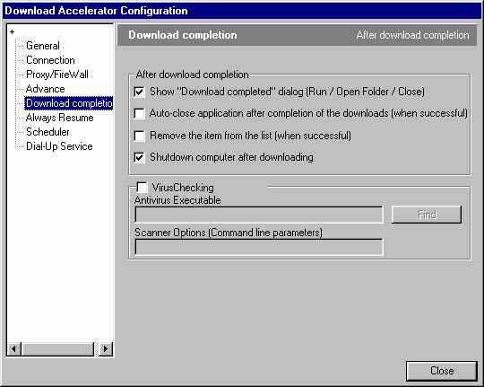

Retourner au menu principal
Les logiciels ftp sont nombreux et disponibles sur différents systèmes d'exploitations. Sous windows et sous unix, le programme qui vient par défaut sur le système d'exploitation s'appelle ftp. Sous Macintosh le programme s'appelle Fetch.
Cependant sous windows et sous unix, le programme ftp ne permet pas de continuer le transfert des fichier lorsque la connection à Internet est coupée pendant le transfert. Ce qui est très facheux lorsqu'on télécharge de gros fichiers puisqu'on doit reprendre le téléchargement depuis le début. Il existe d'autres programmes qui permettent transférer des fichiers et de reprendre le transfert lorsque la connection est coupée avant la fin du téléchargement.
Ce document décrit deux logiciels qui sont disponibles sous windows pour transférer des fichier sous ftp avec la reprise lors de la coupure de connection. Le premier est ncftp qui est un un programme qui ressemble beaucoup à ftp. Le deuxième est "download accelerator" et est plus simple à utiliser pour ceux qui ne sont pas familiers ftp et permet de créer de programmer des horaires de téléchargement à l'avance et s'intègre dans netscape et internet explorer.
Cependant download accelerator est plus simple à utiliser et est décrit dans la section suivante.
http://download7.speedbit.com/dap43.exe
( 1.13M octets )
Des directives sont fournies de façon
détaillées pour ceux qui ne comprennent pas l'anglais.
Pour installer le programme double cliquez sur le fichier après
le téléchargement vous verrez la fenêtre suivante:
Cliquez alors sur le bouton Next et vous verrez la fenêtre suivante:
Cliquez ensuite sur Accept qui la fenêtre suivante apparaîtra:
Vous devez remplir une adresse courrier électronique dans la case E-Mail, example myemail@something.net si vous voulez garder l'anonymat puis cliquez sur le bouton Next. Vous verrez ensuite la fenêtre suivante:
Vous pouvez cliquez sur Next sans à avoir à entrer des données pour chacune des fenêtres qui suivront pour continuer l'installation jusqu'à ce qu'il y ait un bouton "Finish" sur lequel vous cliquerez pour terminer l'installation. Votre ordinateur devra alors être redémarré.
Vous pouvez alors double cliquez sur l'icône
pour configurer le logiciel. La fenêtre suivante apparaîtra:
Choisissez le menu Downloads et sélectionnez le sous-menu Options / Configurations Le fenêtre suivante apparaîtra:
Sous l'onglet General à gauche vous devez ajouter PDF suivi d'un espace puis EXE suivi d'un espace tel qu'illustré ci-haut à l'aide du clavier là où la flèche l'indique. Ceci est nécéssaire pour que Download Accelerator télécharge automatiquement les fichier ayant les extensions pdf et exe lors du téléchargement des revues. Il faut aussi s'assurer que download accelerator est intégré dans Microsoft Internet Explorer ainsi que dans Netscape par les cases cochés dans la fenêtre ci-haut.
Cliquez sur l'onglet Connection à gauche, vous verrez la fenêtre suivante apparaître:
Vous devez vous assurer que la case Disconnect After Download is completed est cochée dans le carré Dial Up. Ceci est nécéssaire si vous voulez vous déconnecter automatiquement d'Internet après que les fichiers soient téléchargés sans avoir à rester devant votre ordinateur.
NOTE: La case Max simultaneous Downloads détermine le nombre de fichiers qu'on peut télécharger simultanément. Lorsque cette limite est atteinte, les fichiers à télécharger sont mis dans une file d'attente et lorsque le téléchargement d'un fichier est complété, un fichier dans la file d'attente peut alors être activé pour le téléchargement.
Vous pouvez aussi configurer votre connection à Internet pour programmer un horaire de téléchargement en cliquant sur l'onglet Dial-Up Service à gauche. La fenêtre qui apparaît est la suivante:
Vous devez choisir la connection à signaler dans la boîte de sélection sous "Connection to dial:" et entrer le login de votre fournisseur Internet dans la case Login Id ainsi que le mot de passe dans la case Password pour que Download Accelerator signale automatiquement le numéro lors de la création d'horaires programmés de téléchargement.
Vous pouvez aussi configurer Download Accelerator pour que l'ordinateur soit fermé automatiquement après que le téléchargement des fichiers soit terminé en sélectionnant l'onglet Download completion à gauche de la fenêtre de configuration. La fenêtre que l'on peut voir est la suivante:

Si on veut que l'ordinateur soit fermé automatiquement
après le téléchargement, on doit cocher la case "Shutdown
computer after downloading". Ceci termine la configuration de download
accelerator.
La fenêtre suivante apparaîtra lorsque vous cliquez "Download with DAP":
Cliquez sur le bouton "Start Download" pour commencer le téléchargement. La fenêtre suivante apparaîtra:
Notez bien qu'il s'agit d'un hyperlien vide, rien à télécharger dans notre example ci-haut.
Aussi, vous pouvez télécharger plusieurs fichiers simultanément selon la configuration que vous avez choisi, mais un maximum de fichiers peuvent être téléchargés en même temps. Les autre sont mis en file d'attente.
NOTE: Les fichier sont sauvegardés sur le bureau de travail par défaut, mais on peut configurer le téléchargement dans un autre répertoire sur le disque dur. Ceci correspond au Default download directory dans la fenêtre d'option / configuration sous l'onglet general.
Si votre connection est coupée, vous pouvez vous reconnecter sur Internet et double cliquez sur l'icône Download Accelerator Plus. Vous verrez alors la fenêtre suivante:
Dans l'example ci-haut, le fichier f117www.tgz n'a
été téléchargé qu'à 6%. On peut
double cliquer sur f117www.tgz pour continuer le téléchargement
là où il s'était arrêté. Une autre façon
de continuer le téléchargement, mais moin pratique, consiste
à retourner sur la page ou l'on avait cliqué sur le fichier
à télécharger, puis cliquer à bouveau sur le lien et le téléchargement
continue automatiquement là où il s'était arrêté.
Vous devez entrer l'URL du fichier à télécharger.
Les site ftp et http sont tous deux supportés par download accelerator.
Cliquez ensuite sur OK pour commencer le téléchargement.
La case "Enable schedule start" est cochée pour désigner qu'on active la programmation automatique d'un horaire de téléchargement. Si on coche la case Daily, cela signifie qu'il y aura une période de téléchargement d'activée tous les jours. La case Once at signifie qu'on active le téléchargement préprogrammé qu'une seule fois à la date de sélectionnée dans la boîte de sélection. La case Always stop downloads at certain time désigne qu'on doit arrêter le téléchargement à l'heure écrite dans la case indicant l'heure juste au dessous.
Pour que le téléchargement préprogrammé soit activé, il faut qu'il y ait au moin un fichier de programmé dans l'horaire de téléchargement. On peut programmer le téléchargement comme en cliquant sur le bouton droit du fichier qu'on veut télécharger dans un horaire préprogrammé puis sélectionner "Schedule Download" comme l'indique la figure ci-dessous:
On voit ici une horloge au bas de la fenêtre avec 9:32:29. Il s'agit du compte à rebours avant le téléchargement au programme. Cela signifie que le téléchargement débutera automatiquement dans 9 heures et 32 minutes et 29 secondes. (Notez que dans la colonne status, il y a la mention scheduled lorsque le fichier est programmé pour le téléchargement) Pour enlever le fichier du programme de téléchargement vous n'avez qu'à recliquer avec le bouton droit pour ensuite sélectionner "Schedule Download". Vous ne verrez plus alors la mention Scheduled à côté du fichié dans la fenêtre.
Si vous avez des commentaire ou des questions vous pouvez les acheminer
à diffusion@contactdirectavecdieu.org